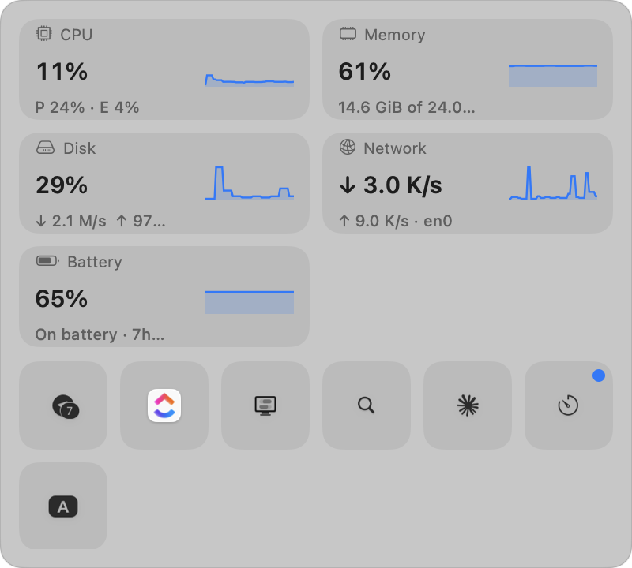

Screens
Everything lives under the bar


PeekBar keeps your menu bar short. Extras you don't need all the time drop into a Control Center–style popup under the bar, so nothing ends up unclickable behind the camera. Live system monitoring is built in.
Free forever. Universal binary. Not notarized yet, first launch needs right-click ▸ Open.

Most menu bar hiders slide icons back into the bar, which on a notched display means they slide into the camera housing. PeekBar reveals them below the bar instead.
Hidden extras open in a popup 8 pt under the bar, right-aligned to the PeekBar icon and clamped on screen. The bar itself never moves, so nothing is ever unclickable.
Tiles show each extra's actual icon. Click one and its genuine menu opens, driven through Accessibility. Right-click, keyboard navigation and search are all there.
Nine modules with sparklines, detail pages and top processes. Pin any of them to the bar as a compact widget: line chart, ring, tachometer, bar chart, label and more.
Metric, above or below, threshold, sustained duration. Fires as a macOS notification with hysteresis so it doesn't flap, and clicking it opens the module's page.
Captures only menu bar icons, uses Accessibility only to click them, and never saves or sends anything. Its single optional network request is a public IP lookup, off by default.
Sampling is demand-driven. A module is read only while a card, widget or alert needs it. With the popup closed and no widgets, nothing samples at all.
No helper daemon, no kernel extension. Every reading comes from Mach, sysctl, IOKit or the SMC user client, read-only.
Requires macOS 12 Monterey or later. Quit other menu bar hiders first (Hidden Bar, Ice, Bartender); two hiding separators in one bar fight each other.
Open the DMG from the latest release and drag PeekBar into Applications.
PeekBar isn't notarized with an Apple Developer ID yet, so Gatekeeper refuses a plain double-click the first time. Right-click PeekBar.app, choose Open, then Open again. If macOS says the app is damaged, clear the quarantine flag instead:
xattr -dr com.apple.quarantine /Applications/PeekBar.appScreen Recording lets PeekBar draw the real icons on tiles. Accessibility lets it click them for you and identify which app owns each extra. The walkthrough shows live status and Allow buttons. If macOS keeps asking after you've granted one, quit and reopen PeekBar once.
Hold ⌘ and drag any status icon. PeekBar expands, a divider appears next to its chevron, and dropping the icon left of the line hides it. Try ⌥⌘A for Arrange mode to see everything at once.
| Shortcut | Action |
|---|---|
| ⌥⌘S | Open or close the popup / dashboard |
| ⌥⌘A | Arrange mode, show every extra with the divider HUD |
| ⌥ click | Open the popup including Vault extras |
| ↑↓←→ / Tab | Move between tiles |
| Return / Esc | Activate a tile / close or go back |
PeekBar is a Swift Package with no third-party dependencies. The logic that decides zones, collapse geometry, identity matching, metric math and alert rules lives in a pure PeekBarCore library with unit tests, so the interesting parts can be exercised without a menu bar.
git clone https://github.com/nabeeltahirdeveloper/peekbar.git
cd peekbar
swift test # unit tests
Scripts/build_app.sh # universal build → dist/PeekBar.app
Scripts/make_dmg.sh # → dist/PeekBar-<version>.dmgNeeds Xcode 15 or later. The build script signs with a Developer ID if you export SIGN_IDENTITY, otherwise with a local self-signed identity or ad hoc. A stable identity keeps the Screen Recording and Accessibility grants across rebuilds.
| Screen Recording | Captures menu bar icons for tiles. Nothing is saved. |
| Accessibility | Presses extras on your behalf and reads their owning app. |
| Notifications | Only if you create an alert rule. |
| Network | Only the optional public IP lookup, off by default. |